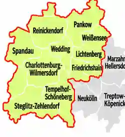

Vous avez besoin d’aide
Pour vous-même ou un proche.
MALAIKA · Berlin
Vous ou un proche avez besoin d’aide au quotidien ? MALAIKA vous présente simplement les possibilités adaptées à votre situation.
Appelez-nous ! Renseignez-vous gratuitement sur les prestations que votre assurance dépendance pourrait prendre en charge dans votre situation, au titre des §§ 36 et 45b du SGB XI, dans la limite des montants disponibles.

Cinq étapes simples, de l’appel à l’aide à domicile.
Pour vous-même ou un proche.
Les premières informations sont gratuites.
Nous discutons des besoins, du Pflegegrad et des prestations possibles.
Nous expliquons les services, les coûts et les documents nécessaires.
Après accord, un membre de notre équipe vient à domicile.
Nos prestations, indépendamment de leur mode de financement.
Présence et lien social
Soutien au quotidien
Aide à la personne
Les droits varient selon le niveau de dépendance (Pflegegrad), le type de prestation et le montant encore disponible.
§ 36 SGB XI : aux Pflegegrade 2 à 5, certains soins à la personne, accompagnements et travaux ménagers peuvent être pris en charge dans les limites légales.
§ 45b SGB XI : en 2026, un montant de soutien de 131 € maximum par mois peut être affecté à certaines prestations éligibles à domicile.
Les conditions varient. Aux Pflegegrade 2 à 5, ce montant ne couvre pas certains actes d’hygiène personnelle. Des frais peuvent rester à votre charge.
☎ Se renseigner gratuitementNos équipes interviennent dans les arrondissements et quartiers suivants. Contactez-nous pour confirmer la disponibilité à votre adresse.

Adresse du bureau:
Flankenschanze 1
13585 Berlin